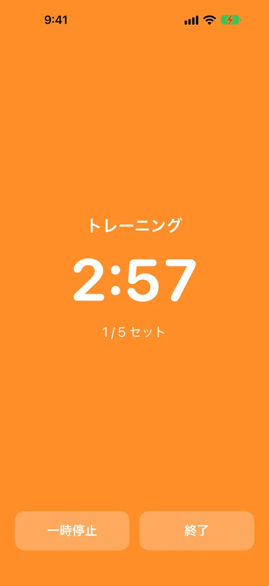
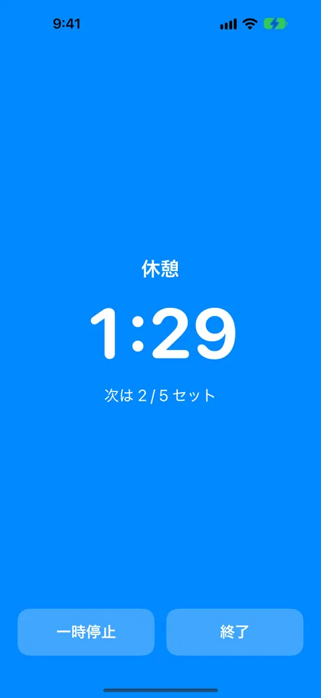
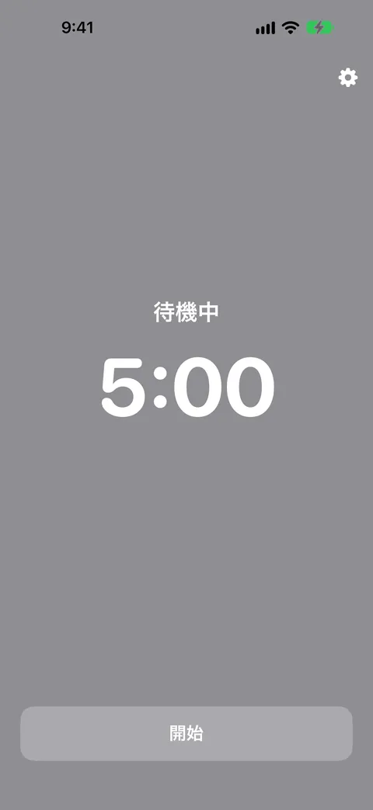
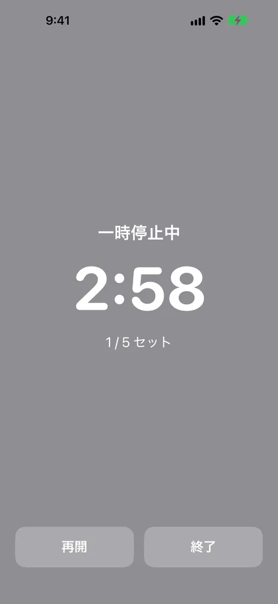
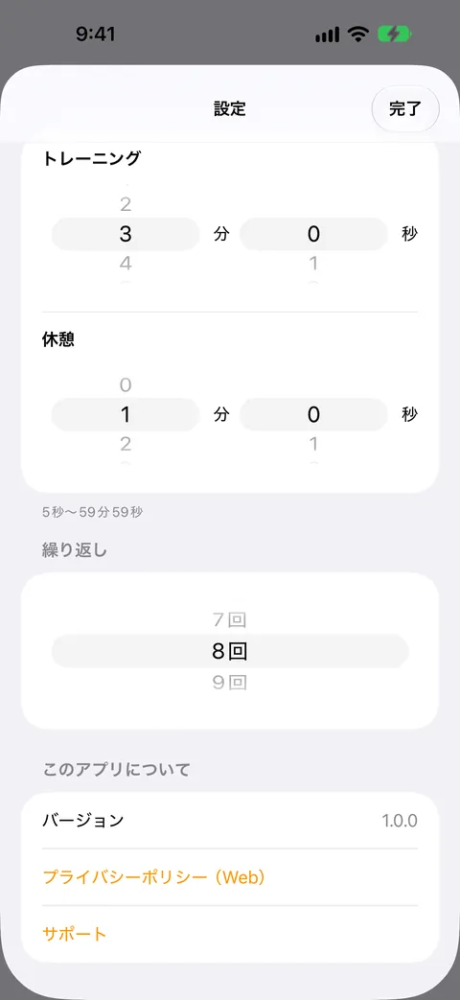

ジムタイマー
音楽を止めずに、音で切り替えを知らせる
トレーニングと休憩の時間を決めて「開始」を押すだけ。切り替わりを、別々の合図の音で知らせます。音楽や動画を流したまま使え、画面ロック中でも鳴ります。広告・課金・アカウント登録はありません。





ジムタイマーは、トレーニングと休憩の切り替えを、合図の音で知らせるインターバルタイマーです。音楽や動画を流したまま、画面を見なくても切り替わりが分かります。
こんなときに
ジムで音楽を聴きながら、「5分トレーニング、3分休憩」を繰り返したい。休憩の終わりやセットの切り替えを、スマホの画面を見ずに知りたい。
できること
- トレーニングと休憩の時間（5秒〜59分59秒）と、繰り返す回数（1〜99回、または止めるまで）を決められます
- 「開始」を1回押すだけ。あとは画面に触れなくても、トレーニングと休憩が自動で切り替わります
- 切り替わりの3秒前から、短い予告音が鳴ります
- トレーニング開始と休憩開始で、違う音が鳴ります（上がる音・下がる音）。画面を見なくても聞き分けられます
- 音楽や動画は止まりません。合図が鳴るあいだだけ、他の音の音量が少し下がり、終わると戻ります
- 画面をロックしても、他のアプリを使っていても、合図は鳴り続けます。消音スイッチがオンでも鳴ります
- 電話がかかってくると一時停止し、終わると続きから再開します
- 一時停止と再開もできます。前回の設定は、次の起動時にも使われます
- 背景の色で状態が分かります（トレーニングはオレンジ、休憩は青）
安心について
無料で、広告もアプリ内課金もありません。アカウント登録は不要です。保存するのは時間と回数の設定だけで、端末の外には送信されません。マイク・カメラ・位置情報・通知の権限は使いません。
ご利用上の注意
合図を鳴らすために、開始から終了までのあいだ音声をバックグラウンドで再生し続けます。使い終わったら「終了」を押してください。音量は、iPhoneのメディアの音量に従います。